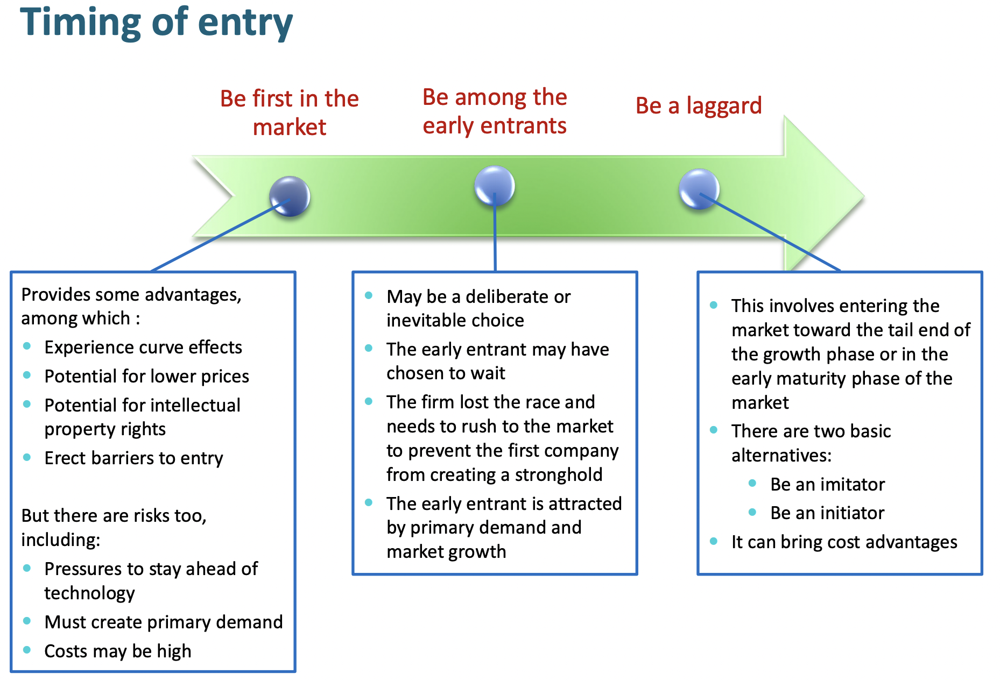
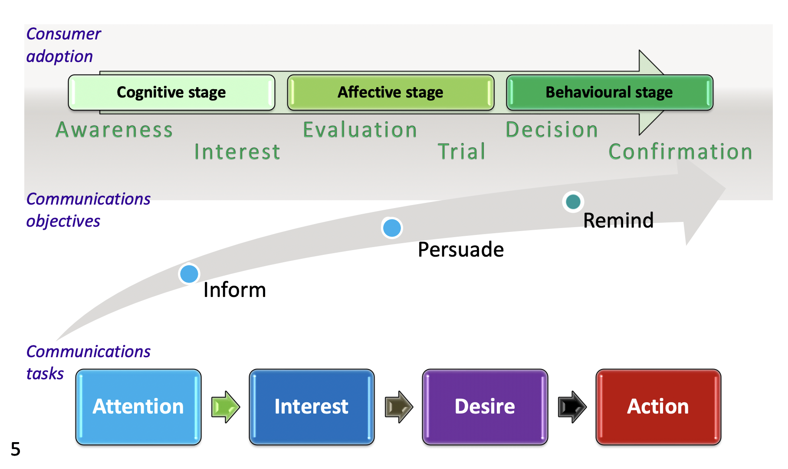

Notes on Marketing
Market Theory and Market Orientation
What is Marketing?
Economics assumes rationality, marketing acknowledges the irrationality in the realization of supply-demand model, and tries to bring in reality into economics.
The 2004 AMA (American Marketing Association) defines Marketing as: An organizational function and a set of processses for creating, communicating and delievering value to the customers and for managing customer relationships in ways that benefit the organization and its stakeholder.
Product Oriented (good product sells itself) -> Sales Oriented (aggressive selling) -> Market Oriented (helps customer solve problem)
Product in Market Orientation (MO)
In a market orientation, The product is anything that delivers a benefit needed by a customer. It is a need-satisfying offering.
People don’t want to buy a quarter-inch drill bit. They want a quarter-inch hole.
Marketing has become an organizational effort, it should be feeded into all steps of product design. Identifying a market need should be the first step of product life line.
Implementing a Market Orientation
There are three major aspects to implement a market orientation: Intelligence Generation, Intelligence Dissemination and Responsiveness
Benefits of MO
There are four major aspects of benefits: Organizational Performance, Customer Consequences, Innovation Consequences and Employee Consequences.
Drivers for MO
Top Management factors, Interdepartmental factors and Organizational systems can facilitate market orientation.
Forms of MO
Companies that rely too much on current customers may become victim of the “tyranny of the served market”.Customers should not be trusted to come up with solutions; they aren’t expert or informed enough for that part of the innovation process.
Needs can be existing when solution already exists, latent when the customer knows about it and no solution exists, or Incipient when the customers do not know about their need yet (IPod, Uber, Airbnb).
Incipient solution is more radical, but more likely to be innovational because there can be no competitors.
The Strategy Curve Model
The strategy curve is an excellent way to assess where we are, where we want to be, and how to get there.
Below is an example strategy curve for an airliner:
Blue Ocean Strategy
A blue ocean strategy refers to one that creates a market without competition. It is a market-driving strategy rather than a market-driven one. One way to try to find a blue ocean is to use a visualized competition factor profile and identify a profile that is distinguishing and effective.
Examples of blue ocean strategy includes Apple and Kangaroo. The latter made wine tasting less intimidating and sells the sense of advanture, boosting coverage and wine consumption. The Australian firm manages to become the biggest exporter to America in just two years time.
Marketing Management
Value-based Marketing
Value = Benefits / Price
Note the benefits and prices include tangible and intangible parts. For example, prices include things that the customers have to give up and benefits include brand image.
Marketing is about making value proposition and making sure that the customers perceieve higher values than competing alternatives.
Customer Relevancy
We need to understand how customers define value and avoid the myth of excellency. An effective value proposition require tradeoffs. Marketers need to focus on “customer relevancy”: the ability to see business through customers’ eyes and conduct business on terms that customers find meaningful.
Effecitve value propositions require:
- what elements should we offer the customers
- what elements should we deny the customers
Competitive advantage through customer relevancy：
- The most sustainable score on dimensions
- Anything less than 3 is not sustainable
- Domination or differentiation on more than one attribute is not sustainable, resulting in resources being wasted
- The definition of a 3 can continually change. Failure to keep up with changing requirements can cause the score to drop.
For example, the price for electric car is high because all of the other things with maintaining the car and refill speed(which customers have to give up). Customers have inertia. What do we give up is even more important than what we require. Another good example is the keyboard layout which was initially designed to slow down typing so that users cannot type too quickly to prevent mechanical arms jamming in a typewritter.
Whenever you give customers too much, it’s obvious that you don’t understand them.
The fox and the hedgehog. The fox knows a little bit of everything. The hedgehog knows everything of a little but it does it so well that the fox don’t know enough to beat it.
The best brands are like a blend of fox and hedgehog.
Being the best of everything is a waste of resources. It can also run into me-too scenario. Oftentime, we should focus on gaining a competitive advantage with customer relevancy.
Marketing Measures
Traditional accounting and financial measures:
- Sales
- Market share
- Profitability, etc.
and long-term meausres:
- Customer satisfaction and brand loyalty
- Product and service quality
- Brand and firm associations
- Relative cost
- New product activity
- Staff capability and competence
But those are hard to measure and quantify.
The Structure of Metrics
Different people have different measures of marketing activities. Otherwise, people within an organization have different metrics (people have speaking different languages):
How Marketing creates Financial Values
To speak in the same language, we can look at how marketing impact the financial value:

Good financial gain:
- Level of cash flow: more sales
- Timing of cash flow: alliances, loyalty, etc., customer purchase once the product is released
- Duration of cash flow: sustainable (because brand is not easily replicated), opportunity
- Risk of cash flow: volalility (seasonality), vulnerability (loyalty programme)
This model helps marketer to communicate with people speaking the financial metric language.
Marketing operates within an organizational context. The 7-S framework is about how to set up an organizational context for marketing.
Market Planning: Implementing the value proposition
After devising the value proposition, we need to identify the market to enter and this involves the following steps:

Situation Analysis
You should take both external and internal factors of the environment into account, but focused on existing/potential issues. This often includes:
- Analysis of internal and external environments
- Analysis of market attractiveness
- SWOT analysis
External and Internal Environment: 5Cs framework
The 5Cs outlines the 5 dimensions of the marketing environment that should be analyszed to develop a market plan.

Among them, it’s vital to understand customers’ decision process because we want to understand the Customer in the 5C model.

You should take the factors mentioned above into consideration when analysing your situation. The brand’s ultimate goal is to trigger routine-resposne behaviour, in which case the customers don’t go through any thinking before they decide to purchase. The brand does it for them.
Market Attractiveness: The 5 Force Model
We can access market attractiveness using the 5-forces model:
- Threat of potential entrants
- Threat of substitutes
- Bargaining power of supplier
- Bargaining power of buyers
- Intensity of rivalry

Below is an example for Starbucks

SWOT Analysis
The SWOT analysis wraps up the information in a structured way.


Market Selection
We first do a rough screening by three major factors:
- Accessibility: How easy it is to access the market?
- Profitability: Can the market afford us?
- Market Size: Is there a latent market?
Then we can dive into a “finer” approach for the remaining candidates. We focus on two dimensions: Market attractiveness and Ability to compete.These factors should be highly industry-dependent and can only be obtained through good marketing research.
Your data is only as good as your research

We can then prioritize our resources based on the weighted scores. The result of the analysis will give a market prioritisation matrix:
Market Segmentation
We break the market into smaller pieces to target our market more specificly. A segment should be a customer group with similar needs, who respond in a similar way to marketing initiatives.
The main benefits of market segmentation includes:
- Optimising resource allocation (niche strategy)
- Identifying opportunity for differentiation
- Develop better understanding of customers
- Avoid competition
Market segmentation can be done demographically or Phychographically. The latter involves surveying the customers by VALS types.
Its main purpose:
• Knowing which VALS segment your customers belong to can help you become a more effective communicator, it can help you “push the right buttons”
• Understanding what motivates your customers illuminates how to communicate to them in ways that will initiate action and make you a more effective marketer
The traditional method (demographic segmentation) suffers from the problem of not being precise. For example, young people aged 18-25 is too simplifying. Therefore, it is sometimes more useful to segment the market using phychological traits.
Benefits of psychographic segmentation:
Study a market: It can help understand customer differences in a market and identify opportunities.
Position a product: It can help identify which market opportunities are strongest. Relating features and benefits to distinct segment needs clarifies strategies for targeting and expansion.
Commercialise new products: It can facilitate successful product launches and helps avoid costly mistakes.
Communicate effectively: it can show how to craft effective messaging campaigns. Understanding what motivates consumers illuminates how to speak to them in ways that will initiate action.
Beyond traditional and phychographical segmentation, Job-based segmentation requires more insight of the customers. It looks at what the customers want to get done through your product/service, and uses that to segment the market. (The fast food chain milkshake compaign example)
Product Positioning
The value proposition informs the product positioning, which is the specific image of a product or service offering in the minds of consumers, relative to competing offerings.
Product positioning is the mental image you want the customer to think of when mentioning your product. Marketers attempt to “position” their products in a particular way in the minds of target markets.

The above scheme can help find your position in the market. Points-of-parity are often the minimal requirement for the product (e.g., shampoo must be able to wash hair).
The Marketing Mix
“A marketing executive is a ‘mixer of ingredients’, one who is constantly engaged in fashioning creatively a mix of marketing procedures and policies in his (sic) efforts to produce a profitable enterprise”
The ingredients to mix are product, price, promotion, place
- Product: design, packaging, brand… Everything abou the product
- Price: financial, costs perceived by the customers (adaption costs etc.)
- Promotion: sales, advertisement, digital marketing etc.
- Place: logistics, retailers etc.
Managing the Product
A product is anything that deliveres a benefit needed by a customer. Formally, a product is a need-satisfying offering.
The Layer of Product
The Product Lifecycle
Between introduction and growth is the chasm, most products will not survive passing the chasm.
The Product Adoption Cycles
We should acknowledge that different groups of people take on new idea with different rate. Therefore, we should aim to target different group in different stages. To start off, it often pays to attract the innovators (tech Enthusiasts, influencer) etc and then spread out. It is not wise to target everybody at the begining.
Innovation vs Imitation

Research shows that innovation advantage will eventually wear out by lower costs of the laggard. So the way to go is relentless innovation. Think of Apple as an example and Nokia as a counter example.
Factors Influencing Product Adoption
There are six factors which influence product adoption: relative advantage, compatibility, complexity, triability, communicability and risk.
- Triability refers to the ease of doign “try free and update later”
- Communicability refers to how effective is the benefits communicated to the customers
Age of the Internet: the Long Tail
It is now possible to offer a massively expanded variety of products. The cost of reaching niches is falling. More information is available to match demand and supply. As a result, we are moving away from a focus on a small number of mainstream products and markets and moving towards a large number of niches. The rise of mass-customisation.
Communication
We can model any kind of communication as follow:
It is not enough to produce a good product or service, value also has to be communicated effectively. People have to be made aware of the product, be shown the value the product offers, persuaded of its advantages, and reassured once they have bought it.
The customer’s decision making can be divided in the following stages which dictates the marketing communication strategies:
- Cognitive Stage: Awareness, interest
- Affective Stage: Evaluation, trial
- Behavioural Stage: Decision, confirmation

Designing the Message
High involvement:
Low involvement: Low involvement products, as the name suggests, are products where the consumer does not need to think too much before purchasing the product. There is not much risk involved in low involvement purchase, as a result of which decision making is much faster. Most FMCG products can be classified as a low involvement product.
Positive purchase motivation: luxury, things you bought as a reward
Nagative purchase motivation: medicine etc.
Customer Apathy
The challenge of customer apathy (not interested):
· Customers are NOT relationship-oriented (77%)
· Most customers not interested in branded experiences
· Most customers do not engage around brands
· Most customers do not know much about brands
· Brand knowledge usually limited
· Customers are just not that into you
· Duplication of brand purchase is unavoidable
· Customers are more self-driven than brand-driven (discount!!!)
· Customer inertia: wine chosen in 1 min, cereal in 23 sec
Managing Price
At least three principles underlies effective pricing:
- It should align with the organization’s broader positioning strategy
- penetration pricing (below competition): introduction
- skimming pricing (above competition): could be during introduction
- stability pricing (around competition): harvest in muturity
- It should be value-based.
- It should be customized according to propensity to pay.
Managing the Place (Distribution)
The two main decisions include: Channel length and Intensity of Distribution:
Channel Length
Channel length is defined by the number of intermediaries between the manufacturer and the customer.
There is always a tradeoff between power to control and costs.
Intensity of Distribution
The intensity is basicaaly the question of how many intermediaries are to be used for distributions. This is often called the channel breadth. There are three strategies: intensive, exclusive and selective
Branding
Brand Equity
Customer Loyalty
Customer loyalty leads to economic benefits. This is displayed through growth effect(more customers) and margin effect(customers become more profitable).
New customers are expensive and not very profitable.
Customer Complaint and Service Recovery
Good brands and companies tend to focus on service recovery because this leads to increased customer loyalty which in term generate more profit.
Loyalty Programme
Loyalty programmes usually don’t increase customers’ loyalty. But it is still useful if the objectives are clear.
Jinghong Chen @2021-2022